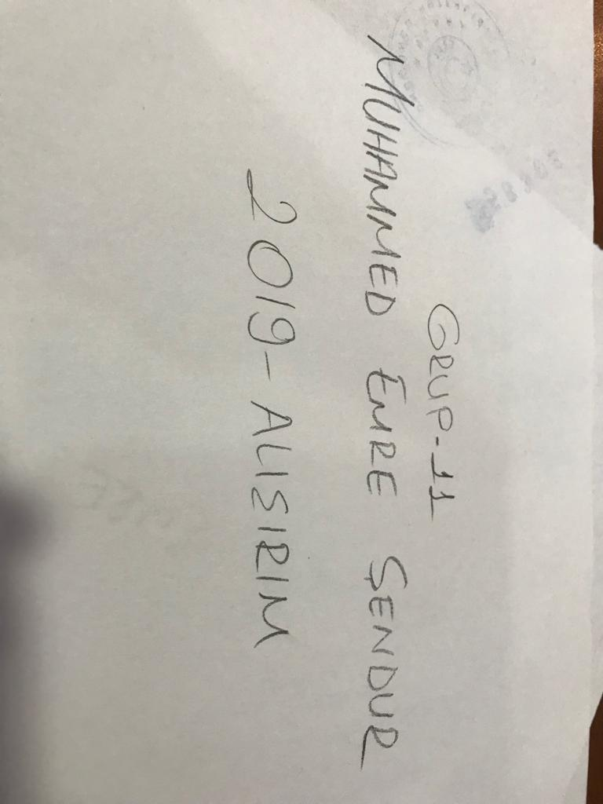

|  |
Dar gelirli aile ortamından yaşayan, olumsuz koşullar nedeniyle sokakta çalıştırılan, eğitime ara vermiş ya da kısmı olarak devam eden çocuklara ve ailelerine ulaşarak koşullarını iyileştirmek; sağlık, gıda, eğitim gibi temel ihtiyaçlarını karşılamak, okula ya da okul çağını geçmiş ise meslek atölyelerine yönlendirmek, sokak ve madde ile tanışmaması için, önleyici çalışmalar yapmaktır. Aileleri madde ve sokak konusunda bilgilendirici çalışmalar yaparak, suç madde gibi olumsuz olgularla karşılaşmadan çocuğu ve aileyi bilinçlendirmek, şartlarını iyileştirmek için özel ve tüzel kuruluşlarla iş birliği oluşturarak,önleyici ve kurutucu çalışmaları hayata geçirmektir. Çocuğa ve aileye maddi ve manevi yardımda bulunmak, böylesi çocuk ve gençlerin aileleriyle iletişime geçip sorunlarının birlikte aşılmasını sağlayarak onları ailelerine ve topluma kazandırmaktır.
|